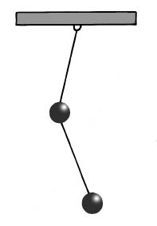
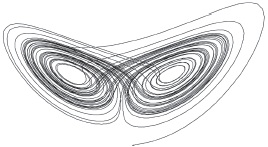
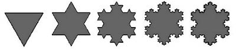

Kelebek etkisinin hava durumu, iklim ve gezegenlerin hareketi üzerindeki etkisi
Bu pek de öyle yeni bir fikir değildir. Bu kavrayışla büyümüş bile olabilirsiniz, bilinen bir çocuk tekerlemesinde şöyle der:
Bir tırnak yüzünden bir nal kaybedildi,
Bir nal yüzünden bir at kaybedildi,
Bir at yüzünden bir süvari kaybedildi
Bir süvari yüzünden bir savaş kaybedildi
Bir savaş yüzünden bir krallık kaybedildi
Kimi zaman “kelebek etkisi” olarak bilinen kaos kuramıdır bu. Tek bir tırnağın yokluğu jeopolitiği istikrarsızlığa sürükleyebilir mi? Bir kelebeğin kanatlarını çırpması binlerce kilometre ötede fırtınaya yol açabilir mi? Cevap evettir ve her zaman böyle olur. Tabii kesinlikle bunlara yol açacak biçimde değil. Yukarıda bahsettiğimiz tekerleme, ortaya çıkacak sonuçlara oyuncu bir biçimde bakmanın bir yoludur açıkçası. Zaten kelebek bile ortaya atılıveren bir yorumla doğmuştur.
Bu alanda araştırmaları başlatan Edward Lorenz 1972’de Amerika Bilimin İlerlemesi Cemiyeti’nin toplantısında bir konuşma yapacaktı; gelgelelim konuşmasına bir başlık bulamamıştı. Oturumun başkanı Philip Merilees nihayetinde bir şey buldu. Lorenz dokuz yıl önce kaleme aldığı bir makalede bir meteorologun kaos kuramıyla nasıl alay ettiğinden bahsetmişti; meteorolog, kuram doğruysa “bir martının kanatlarını çırpmasının hava durumunun gidişatını sonsuza dek değiştireceğine” işaret etmişti. Merilees nihayetinde bu sözleri hatırlamış ve popüler kültüre ancak pek az bilimsel kavramın başardığı kadar girecek bir değişken yaratmıştı. Lorenz’in konuşmasının başlığı “Brezilya’da kanatlarını çırpan bir kelebek Teksas’ta bir fırtınaya yol açar mı?” idi.
<>
“Brezilya’da kanatlarını çırpan bir kelebek
Teksas’ta bir fırtınaya yol açar mı?”
PHILIP MERILEES
<>
Kelebek etkisi için kullanılan resmi terim “başlangıçtaki koşullara duyarlı bağlılık”tır. Temel fikir zaman içinde değişen birçok sistemin –ister hava durumu gibi doğal olsunlar, ister bir bilgisayar programının sayısal çıktısı gibi yapay olsunlar– başlangıçlarında minicik bir değişiklik bile yapılmış olsa çok farklı bir biçimde son bulmuş olacağıdır. Bu basit gözlemin o kadar köklü sonuçları olmuştur ki yeni bir araştırma alanının doğmasını beraberinde getirmiştir.
Bilindiği adıyla bu alanın, kaos kuramının sonuçları bilimin tamamında hissedilmiştir. Kaos kuramının etkisi, gezegenlerin dinamiğinden tutun salgınların insan nüfusları arasında yayılma biçimine varıncaya dek önemli olduğu kadar geniş erimlidir. Öyle görünüyor ki bütün evren bir kaos hali içindedir. Bu keşif görkemli bir unvanı olan Marki Pierre Simon de Laplace’a korkunç bir şok gibi gelmiş olabilir. Laplace 18. yüzyılda Newton’ın yarattığı devrimi neşeyle kucaklamıştı. Onun, Newton’ın kütleçekim kuramını alıp bütün gezegenlerin hareketlerinin haritasını çıkarmak için kullandığı, evrenin mekanizmasından bahsettiği kitabı bir başyapıttı. Bundan birkaç yıl sonra Laplace bilinen bütün fenomenleri ehlileştirmek için cesurca bilimin gücüne yaslandı:
Belli bir anda doğada hareket eden bütün kuvvetleri ve evrendeki bütün nesnelerin konumunu bilen bir zeka –gerekli bütün hesaplamaları yapabilecek çocukluğundan beri hava olaylarını izlemiş; II. Dünya Savaşı sırasında da Amerikan Hava Kuvvetleri için hava durumu tahminleri yapmıştı. Savaştan birkaç yıl sonra Massachusetts Institute of Technology’de araştırma görevlisi olarak çalışırken meteorolojiyi matematikle ve nispeten yeni bir bilim olan bilgisayarla birleştirdi. Hava durumunun basit bir versiyonunun modelini çıkarabilecek bir işlemci yaptı. Ve işte tam bu noktada kelebek etkisini keşfetti.
<>
Böyle bir zekaya göre hiçbir şey belirsiz olmayacaktır;
gelecek tıpkı geçmiş gibi açık bir kitap olacaktır.
PIERRE SIMON, MARQUIS DE LAPLACE
<>
Bilimde çok önemli birçok atılımda olduğu gibi, bu keşif de kazara oldu. 1961 yılında bir öğleden sonra Lorenz, bilgisayarında bir hava durumu simülasyonunun yarısına gelmişti, vakti kısıtlıydı. Başlamak istediği yerden itibaren çıktısını almayı düşünerek simülasyonun geri kalan yarısının basılmasını sağlayacak olan rakamları yazdı. Simülasyon yanlış çıktı, en azından orijinalinden bir hayli farklıydı.
Bu belirgin hata yüzünden telaşa düşen Lorenz girdi olarak ne kullandığını kontrol etti. İnce ayrıntıların hiç fark yaratmayacağını düşünerek üçüncü basamaktan sonraki rakamları kesip attığı dikkatini çekti. Bilgisayar önceden 0,506127’yi kullanırken, Lorenz 0,506 yazmıştı. Bu da devasa bir farklılık yaratmıştı. Lorenz başlangıçtaki koşullara duyarlı bağlılığı keşfetmişti: Sınırlı bilgimizden kaynaklanan bir tahmin edilemezlik söz konusuydu.
Cetvellerimiz sonsuz derecede küçük, eylemlerimiz sonsuz derecede pürüzsüz, makinelerimiz sonsuz derecede güçlü değildir. Dolayısıyla gerçekleştirdiğimiz her ölçüm ve bu ölçümleri kullanarak yaptığımız her hesaplama küçük, fakat sonlu bir hata taşıyacaktır. Lorenz’den önce bunun hata kadar küçük bir soruna yol açtığı düşünülebilirdi. Fakat başlangıçtaki koşullara duyarlı bağlılık büyük bir sıklıkla hatanın nihayetinde devasa olacağı anlamına gelir.
Baktığımız her yerde kaos görürüz. Örneğin güneş sistemi kaotiktir; çünkü iki cisimden fazlasının etkileşimini gerektirir. Henri Poincaré’nin kanıtlamış olduğu üzere iki cisim arasındaki etkileşimleri betimleyecek denklemlerin çözümleri bulunsa da bu cisimlere bir tane daha –ya da birkaç tane daha– eklerseniz hiçbir kesin çözüm bulunmayacaktır. Denklemi tanımlayan matematiksel denklemler basitçe çözülemez.
Sayılamayacak kadar çok kayanın, asteroidin ve kuyruklu yıldızın lafını bile etmiyoruz, sekiz gezegen ve bir güneşle göklere kaos hâkimdir. Fakat saat gibi işleyeceğine kaosla işleyen bir sistem, her an başka bir gezegenle çarpışma tehlikesi içinde olduğumuz anlamına gelmiyor. Kaotik yörüngeler genellikle “sınırlıdır”, genellikle hiç tekrarlamayan döngüler içinde; fakat sınırlı bir uzay içinde hareket ederler, böylece çarpışma tehlikesi sınırlanmış olur.
Garip Güzellik
Kaosun katı sınırlar dahilinde işlediği bu sınırlılık başka bir kaos ikonunun yükselmesine neden olmuştur: “Garip çekici.” İkili sarkaç gibi kaotik davranışlar gösteren basit bir sistem düşünün: İki top birbirine gevşekçe bağlanmış ve serbestçe salınıyor olsun. İkili sarkacın serbest hareketi bacağınızı kalçanızdan hareket ettirmenize benzer; ama diziniz iki yöne de bükülebiliyordur. Kendi gözlerinizle görünceye dek, ikili sarkacın gösterdiği öngörülemezlik derecesini hayal etmek imkânsızdır. İleri geri sallanıp durur; her salınmanın son noktası görünüşe bakılırsa rastgeledir.

İKİLİ SARKAÇ
Keyfi bir başlangıç noktasından hareketle serbest salınan ikili sarkacın uç noktası, belirgin şekiller oluşturan halkalardan oluşan bir desen çizer. Aynı halka ikinci bir kez çizilmese de oluşmuş örüntüden fazla bir sapma görülmez. Garip çekiciye adını veren, belli bir biçime bu biçimde “çekilmek” olmuştur. Garip çekicinin belki de en meşhur örneği, kelebek şeklindeki Lorenz çekicisidir. Bu, kaotik bir sistemin üç boyut içinde hareketinin bir haritasıdır. Hareket devam ettikçe çizgiler giderek yoğunlaşır. Fakat izlenen yol kendi kendisini kesmez ve asla tekrar etmez.

LORENZ ÇEKİCİSİ
Bir üçgenin köşeleri olarak yerleştirilmiş üç mıknatısın hemen üzerinde hareketlendirilmiş çelik bir sarkaç da benzer bir örüntü yaratır. Mıknatısların her biri çelik top üzerinde bir çekim yaratır ve bu çekim top mıknatısın alanına girip çıktıkça değişir. Birbirine rakip bütün çekimlerin toplamı sarkacı ilk konumunda ya da ivmesinde en küçük bir değişime duyarlı olan kaotik bir yörüngeye sokar. Bu durum sarkacın tuhaf çekicisinde de görülmektedir.
Kaos Saldırdığında
Bu kaotik yörüngelerin sınırlı olmaları son derece uç sonuçlara yol açmayacakları anlamına gelmiyor. Bu durum gezegenlerin birbirleri üzerinde yaratabilecekleri etkilerde görülmüştür. Yörüngeler beklenen yollarından çok fazla sapmasalar da kaotik hareket zaman zaman bir felaket tehdidi yaratabilir. Hesaplamalar Satürn’e solar rüzgârı oluşturan parçacıklardan gelebilecek minicik bir tekmenin gezegenin yörüngesini “aperiyodik” hale getirebileceğini göstermiştir. Bu, Satürn’ün güneşin etrafında her döndüğünde biraz farklı bir yol izleyecek olması anlamına gelir.
Korkutucu bir ihtimaldir bu; çünkü Jüpiter, Satürn ve Güneş’in bir noktada aynı hizaya gelmesi ihtimaline kapıyı araları. Bu üçlünün bileşik kütleçekimi Mars ve Jüpiter’in yörüngeleri arasında yatan asteroit kuşağından kayaları çekmeye ve asteroit yağmuru başlatmaya yeter. Dinozorların sonunu getiren asteroit yağmuru öncesinde böyle bir olayın gerçekleştiği yolunda iddialar vardır. Böyle olmuşsa bu, kaosun biyoloji üzerinde etkili olduğu ilk olay değildir ve kesinlikle son olay da olmayacaktır. Kelebek etkisi çifte sarkacın salınmasına hükmettiği kadar biyolojiye de hükmeder.
Doğanın Kaosu
---
FRAKTAL ÖRÜNTÜLER
İşte size basit bir soru: Britanya’nın sahil şeridinin uzunluğu nedir? Şöyle birkaç ansiklopedi karıştırın, feci derecede farklı cevaplarla karşılaşırsınız; farklılık oranı yüzde 20’ye kadar varabilir. Bunun sebebi verilebilecek en düz cevabın, cetvelinizin büyüklüğüne bağlı olmasıdır. Küçük bir cetvelle çalışırsanız, her zaman ölçülecek küçük şeyler olacaktır. Sahil şeritleri de, doğal dünyanın birçok unsuru gibi kendilerine benzer, yani fraktaldir.

Sonuçta fraktal bir sahil şeridini daha yakından ölçüp elinizdeki toplam uzunluk değerine eklemede bulunabilirsiniz. Fraktal bir yapıya yakından baktığınızda, gördüğünüz şeyin özü değişmez. Her büyüklük ölçeğinde, aynı örüntüler tekrar eder. Örneğin çöldeki kum tepelerinden ya da okyanustaki dalgalardan başka bir şeyi göstermeyen bir resme baktığınızda, birkaç kilometrekarelik bir alana mı, yoksa birkaç santimetrekarelik bir alana mı bakıyorsunuz, söyleyemezsiniz. Aynı şey sahil şeritleri için de geçerlidir.
Bir fraktal yaratmak, basit fakat tekrarlanan şekiller çizme meselesidir. Örneğin Koch kar tanesi, mevcut bir üçgenin her kenarının merkezine eklenmiş üçgenlerden oluşur. Eklenen üçgenlerin kenar uzunlukları, üzerinde bulundukları kenarın uzunluğunun üçte birine eşittir. Bir-iki tekrardan sonra ortaya çıkan sonuç şaşırtıcı derecede ayrıntılı bir örüntü olur.
İnce ayrıntılar fraktallerin köşetaşıdır; tam da bu noktada kaos kuramıyla ilişkilidirler. Kaos kuramı mükemmel derecede doğru bir tablo yaratmanın mükemmel derecede doğru bir enformasyonla işe başlamaya dayalı olduğunu söyler, ama bu imkânsızdır. Kaotik bir sistemde, enformasyondaki herhangi bir yanlışlık korkunç derecede büyüyecek, ortaya feci derecede çarpık bir tablo çıkacaktır. Fraktaller kaos kuramının tepetaklak edilmiş hali gibidir: bir tablodan edinebileceğiniz enformasyonun tutarlılığı ona ne kadar yakından baktığınıza bağlıdır; ne kadar yakından bakarsanız bakın, hiçbir zaman mükemmel derecede doğru bir enformasyon almanızı sağlayacak kadar yakından bakamazsınız.
Sonuçta fraktal davranışın tezahürleri aynı ölçüde ilgi çekici ve öfkelendiricidir. Doğal dünyanın dışında fraktal yapılar bulmak araştırmacıların ilgisini çekmiştir. Finansal veriler –örneğin borsa işlemlerinin kayıtları– sıklıkla fraktal bir biçim alır, bu da ayrıntılı yapılarının saçma denecek kadar basit kurallar doğduğunu düşündürür. Fakat bu kurallar hakkında yararlı enformasyon elde etmek saçma gelecek, hayalkırıklığı yaratacak kadar zordur.
KOCH KAR TANESİ DİZİSİ
En meşhur fraktal yapı Mandelbrot kümesidir. İlk kez Fransız matematikçi Benoit Mandelbrot tarafından yaratılan bu küme, göreli olarak basit bir denklemle tanımlanmakta; ama hepsi de benzer yapılar içeren balonlar, dikenler, spiraller ve jetlerden oluşan karmaşık bir kolaj yaratmaktadır. Estetik cazibesinin matematikte bir rakibi daha yoktur; ama bu yapı ne anlama gelir?
Bu hâlâ açıklık kazanmamıştır. Araştırmacılar finans piyasalarındaki fraktal yapının basit kurallarla yönetildiği, dolayısıyla analiz etmenin (ve dolayısıyla belki de tahminler yürütmenin) sanılandan daha kolay olabileceğini ileri sürmüştür. Fraktal yapıların doğal ve yapay sistemlerde, insan kültüründe –örneğin bilinen birçok müzikal örüntüde, Jackson Pollock’ın sanatında– her yerde bulunması Mandelbrot’yu, fraktal yapıların evrenin derin sırlarına açılan kapının anahtarı olduğunu iddia etmeye götürmüştür. Gelgelelim fraktaller üzerine yapılan çalışmalar gerçekten önemli diyebileceğimiz sonuçlar henüz doğurmamıştır.
---
Kaos teorisinin ekoloji bilimi üzerinde muazzam bir etkisi olmuştur. Nüfusların iyi zamanlarda genişleyip kötü zamanlarda eridiği fikri her zaman biyolojik düşünme biçiminin güçlü bir parçası olmuştu; fakat kaos teorisinin yükselişi ve kelebek etkisi bir Evreka anı yarattı. Kaos çıkagelmeden önce, matematiksel bir eğilimi olan biyologlar ilgi duydukları durumlara yaklaşıklık gösteren denklemler yazıyorlardı. Örneğin bir kilometrekarelik bir alan içinde kaç sincabın yaşadığını, sincapların yiyecek kaynaklarının ne kadar zengin olduğunu, ne kadar sıklıkla ürediklerini ve topraklarını kaç yırtıcıyla paylaştıklarını betimliyorlardı.
Bütün bunlardan hareketle, sincap nüfusunun zaman içinde nasıl büyüyeceği ve azalacağı üzerinde çalışabiliyorlardı. Fakat denklemlerin kontrolden çıkıyormuş gibi görünen sonuçlar verdiği her seferinde matematiksel biyologlar sistemde dizginlenmesi gereken bir istikrarsızlık olduğunu varsayarak senaryoyu “yeniden başa alıyorlardı.” Kaos teorisinin ilerlemesiyle birlikte büyük değişimlerin, hayli kolay bir biçimde sistemin doğal bir parçası olabileceği açıklık kazandı.
Örneğin aralarında hiçbir yırtıcının bulunmadığı bir sincap nüfusu düşünün. Ortalama olarak her nesilde her yetişkin bir yavrudan az yavrularsa nüfus sıfıra inecektir. Yavru sayısı bir ile üç arasında olursa bir istikrar sağlanır. Fakat her kuşakta ortalama yavru sayısı üçten fazla olursa işler tuhaflaşır.
Nüfus istatistiklerinde bir “patlama-düşme” eğilimi belirir. Esasen bu durum, daha önce bahsettiğimiz telefon hattındaki cızırdayan vakum tüpünün aynısıdır: Bir geri bildirim süreci şiddetli salınmalara sebep olur. Kaos kuramcıları buna “çatallanma” der. Bu, nüfusun her kuşakta yavru sayısına benzersiz derecede duyarlı olduğu anlamına gelir. Nüfus bir yıl patlayacak, ama ertesi yıl düşecektir. Arada bir nokta yoktur. Sonra çatallanma tekrar tekrar çatallanır ve nihayetinde işler rastgeleymiş gibi görünmeye başlar: Belirgin bir örüntü yoktur. Fakat bu ancak kısa bir süre devam eder: Zaman geçtikçe yavru sayısı yeniden artar ve hiç ortada yokken başka bir çatallanma beliriverir.
Bu karmaşıklık doğal dünyanın her yerinde vardır ve bunu anlamak hayatları kurtarabilir. Vurma ve ıskalama, yükselme ve alçalma, patlama ve düşme AIDS, kızamık ve çiçek gibi hastalık salgınlarında ortaya çıkar örneğin. Vaka sayısı kaotik bir yörünge izlediğinden, aşı programı gibi bir şeyin yaratacağı darbeye duyarlıdır. Fakat bu darbe her zaman hastalığın kökünü kurutmaz; rakamlar istikrarsız bir düzene sürüklenebilir, örneğin bir çatallanma bölgesine. Bu durum hastalıkla ilgili kısa vadeli rakamların yükselebileceği anlamına gelir, aşı programı başarısız olmuştur. Kaosun bilincinde olmak tıp araştırmacılarının verilen ilk cevabın ötesini görmelerini, kaotik cevabın gelişmesine izin vermelerini, uzun vadede bir düşüş eğilimi olabilecek şeyin bir haritasını çıkarmalarını sağlar.
Biyolojik kaosun ve kelebek etkisinin anlaşılması hayatları daha hızlı bir biçimde de kurtarmaktadır. Kalbiniz hücreler arasında bir tür dalga gibi işleyen, kasın belli biçimlerde ve belli zamanlarda kasılmasına yol açan koordine elektrik akımları sayesinde atar. Bu akımlar bozulduğunda bir “aritmi” ortaya çıkar. Kalp aritmileri her yıl yüzbinlerce kişinin ölümüne yol açmaktadır: Kalp birçok sebepten dolayı normal bir biçimde çarpmaya, hatta çarpmaya son verebilir. Genelde kalp kaslarının hepsi rastgele kasılmaktadır ve kalp artık bir pompa değil, durmadan hareket eden, seğirip duran bir doku yığınıdır. Kaotik bir sistemdir; iyi bir vuruşun kaosa son verebileceği bir sistem.
Tıpçılar bir elektrik akımının bu sorunu düzeltebileceğini uzun zamandır biliyorlar; fakat öyle herhangi bir fişi insan kalbine takamazsınız. Ritmi düzeltmek ritmin kaotik dinamiklerini anlamayı gerektirir. Kalp aslında sarkaca benzer, salınan bir aygıttır. Kaotik bir sarkacın nasıl kontrol edileceğini bilirseniz deneme-yanılma yoluyla tasarlanmış olanlardan çok çok daha iyi çalışan bir defibrilatör tasarlayabilirsiniz. Fakat kelebek etkisinin işe sürüldüğü başlıca alan tam da başladığı alan olmuştur: Hava tahmini.
Öngörülebilir Derecede Öngörülemez
Meteorologlar, Dünya’nın hava sistemlerinin son derece karmaşık simülasyonlarını dev süper bilgisayarlarda işletmeyi severler. Simülasyonlar fizik kanunlarına dayanır; okyanus ve hava akımlarının dünya etrafında hareket etme biçimi gibi şeylerin modelini çıkarır. Kelebek dönemi öncesinde, uygun derecede güçlü bir simülasyonun hava durumunu haftalar, aylar, belki yıllar önce tahmin edeceğini düşünebilirdik. Kaos bize bunun mümkün olmadığını söyler.
Sorun şudur ki modellerin fiziği yaklaşıktır ve simülasyonu kurmak için kullanılan veriler çok daha yaklaşıktır. Bilgi toplamak için kullanılan meteoroloji istasyonları Dünya’nın her yerine yayılmıştır, aralarında büyük mesafeler vardır; meteoroloji istasyonları arasındaki yerlerin bilgisine de sahip değiliz. Bilim insanları artık, birkaç gün içinde bu hata kaynaklarının hava durumu modellerini aslında havada olup bitenlerle hiç ilgisi olmayan bir yola sokmaya yeteceğini biliyor. Meteoroloji istasyonları arasında kanatlarını çırpan bir kelebek hiç kimsenin geleceğini görmediği bir fırtınaya sebep olabilir.
Elbette ki meteorologlar her yeni veri girişinde modellerini baştan başlatırlar. Ayrıca “toplu” tahminler yürütürler; birbirinden çok az farkı olan ilk koşulları modele yükleyip çıktının ne kadar değiştiğine bakarlar. Bu durum herhangi bir tahminden çok daha geçerli olması muhtemel ortalama bir tahmin hazırlamalarını sağlar. Aynı zamanda tahminlerinin bir ölçüde güvenilir olmasını mümkün kılar. Bir tahminde bulunmak yeterli değildir; bu tahmine ne kadar güveneceğinize dair bir fikrinizin olması da iyidir.
İroniktir, en uzun vadeli tahminlerin sonucu gayet olumlu olmuştur; iklim tahmini bilimi ilk koşullara kısa vadeli hava durumu tahminleri kadar duyarlı değildir. Bunun sebebi esasen iklim tahminlerinin özel durumlardan çok, genelliklerle uğraşıyor olmasıdır. Bir kelebeğin kanatlarını çırpması Texas’ta bir fırtınaya yol açabilir; ama bir başka kanat çırpma patlamakta olan bir fırtınayı yatıştırabilir. Bir iklim analizini oluşturan ortalama otuz yıl boyunca, fırtınaların sayısı eşitlenebilir; kelebeklerin her biri de ilgisiz hale gelir.
Lorenz bunu göstermek için kaos kuramının denklemlerini kullanmıştı. Garip çekiciye baktığınızda belli bir şekil görürsünüz. İklim bilimine uygulandığında, gördüğünüz şekil gelecekteki iklimi gösterir. Ortalıkta tahmin edilemez bir biçimde dolaşan, yavaş yavaş şekli yaratan akış halindeki çizgi, sinyalin sesi gibidir: Bir ilgi parametresi değildir. Bu da kısa vadede tahminleri ne kadar kaotik olsa da iklim simülasyonları yürütmenin yaklaşmakta olan şeye dair geniş kapsamlı güvenilir bir tablo ortaya koyduğu anlamına gelir. Peki, o halde kaos kuramı felaket tellallığı mı yapmaktadır? Tam tersi: Kanatlarını çırpan o kelebek, insanlığın karşı karşıya olduğu en büyük tehdide karşı bizi uyarmada araç vazifesi görmüştür: O tehdit insan faaliyetleriyle kontrolden çıkmış iklim değişikliğidir. Kaos her zaman bir sorun değildir.